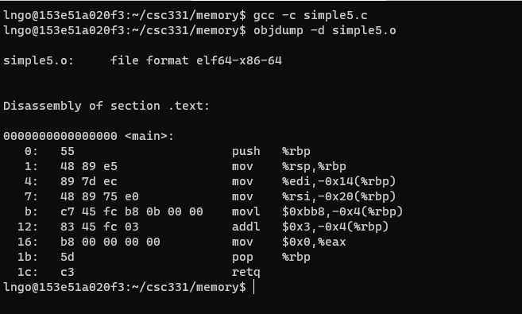
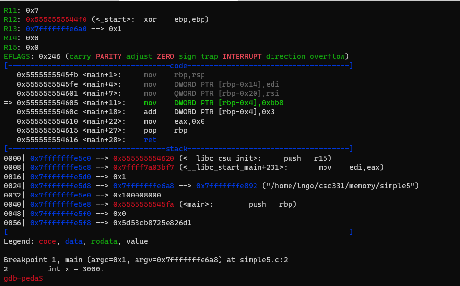
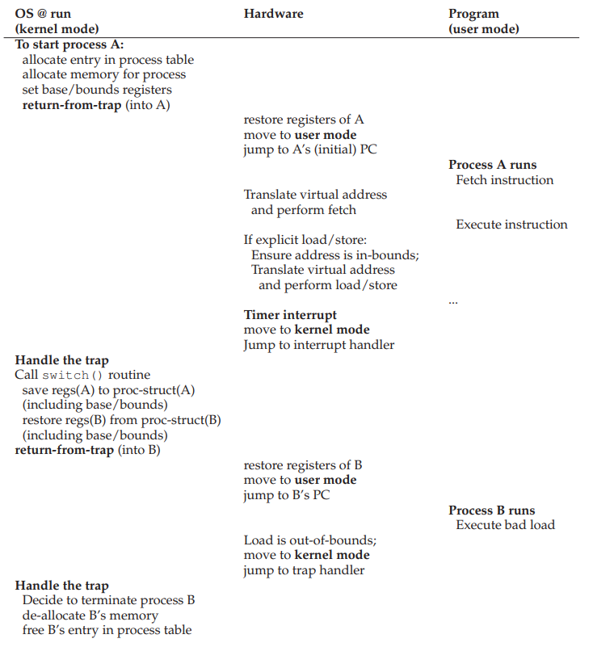
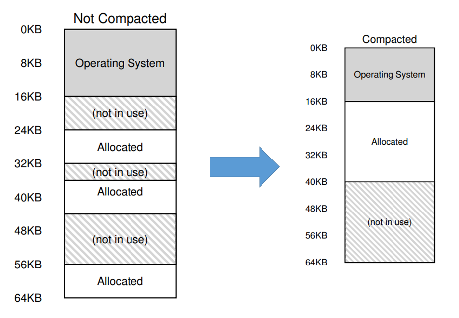

Memory virtualization mechanism: address translation#
Key concept
Understand the design principles behind an efficient memory virtualization implementation.
Understand the required flexibility for applications.
Understand how to maintain control over memory location accessibility.
1. The questions?#
How can we build an efficient virtualization of memory?
How do we provide the flexibility needed by applications?
How do we maintain control over which memory locations an application can access?
2. General technique#
Hardware-based address translation (address translation)
HW transforms virtual address from memory access into physical address.
The OS gets involved to ensure correct translations take place and manage memory to keep track of and maintain control over free and used memory locations.
3. Initial assumptions#
User’s address space must be place contiguously in physical memory.
The size of the address space is less than the size of physical memory.
Each address space is exactly the same size.
4. Hands on: revisiting where things are in memory#
Launch your container/Linux interface
docker run --rm --userns=host --cap-add=SYS_PTRACE --security-opt seccomp=unconfined -it linhbngo/csc-container /bin/bash
Create a file named
simple5.cwith the following contents:
Compile and view
simple5.cobject file
gcc -c simple5.c
objdump -d simple5.o

What is the decimal value of
0xbb8?Compile with
-gforsimple5.c.Execute
gdb simple5, set breakpoint atmain, and start running.

Where is the variable
xis? (runp &xto find out)What is the difference between the value contained in
%ebpand the address ofx?Where is the machine instruction? (code)
Where are their location in address space?
5. Initial assumptions#
User’s address space must be place contiguously in physical memory.
The size of the address space is less than the size of physical memory.
Each address space is exactly the same size.

6. Early attempt: dynamic relocation#
Hardware-based
Aka base and bounds
Two hw registers within each CPU:
Base register
Bounds (Limit) register
physical address = virtual address + base
0 <= virtual address <= bound
7. Dynamic relocation: after boot#

8. Dynamic relocation: during process run#

9. Dynamic relocation: Summary#
Pros:
Highly efficient through simple translation mechanisms
Provides protection
Cons:
Wastage through internal fragmentation due to space inside the allocated (contiguous) memory units are not fully utilized.
10. Initial assumptions#
~~User’s address space must be place contiguously in physical memory.~~
~~The size of the address space is less than the size of physical memory.~~
~~Each address space is exactly the same size.~~
How do we support a large address space with (potentially) a lot of free space between the stack and the heap?
11. Segmentation: generalized base/bounds#
Original: One base/bound pair for one address space.
Segmentation: One base/bound pair per logical segment of an address space:
Code
Stack
Heap
12. Segmentation: generalized base/bounds#

13. Example#
Note: 32K = 215 = 32768
Segment |
Virtual segment base |
Virtual segment bound |
Physical segment base |
Physical segment bound |
Size |
|---|---|---|---|---|---|
Code |
0KB |
2KB |
32KB |
34KB |
2KB |
Heap |
4KB |
6KB (can grow up) |
34KB |
36KB |
2KB |
Stack |
16KB |
14KB (can grow down) |
28KB |
26KB |
2KB |
Reference is made to virtual address 100 (code segment)
This is called the
offsetphysical address=physical segment base+offset= 32K (32768) + 100 = 32868
Reference is made to virtual address 4200 (heap segment)
What is the correct
offset:offset=virtual address-virtual segment base= 4200 - 4096 = 104physical address=physical segment base+offset= 34K (34816) + 104 = 34920
Reference is made to virtual address 7000?
Look likes heap segment
Is it heap segment?
offset=virtual address-virtual segment base= 7000 - 4096 = 2904physical address=physical segment base+offset= 34K (34816) + 2904 = 37720This falls into physical addresses that are markedas not in use.
Segmentation Fault: AKA segmentation violation
Illegal virtual address
14. Segmentation with generalized base/bounds: Summary#
Pros:
Efficient saving of physical memory (avoid internal fragmentation)
Enable the creation of segments with various sizes
Cons:
External fragmentation
15. External fragmentation: compacting#
Computationally expensive

16. External fragmentation: algorithmic allocation#
A data structure that keeps track of free memory regions:
Best-fit
Worst-fit
First-fit
Next-fit
Buddy algorithm
Does not address the core of the issue, only minimize it as much as possible. New solution is needed!